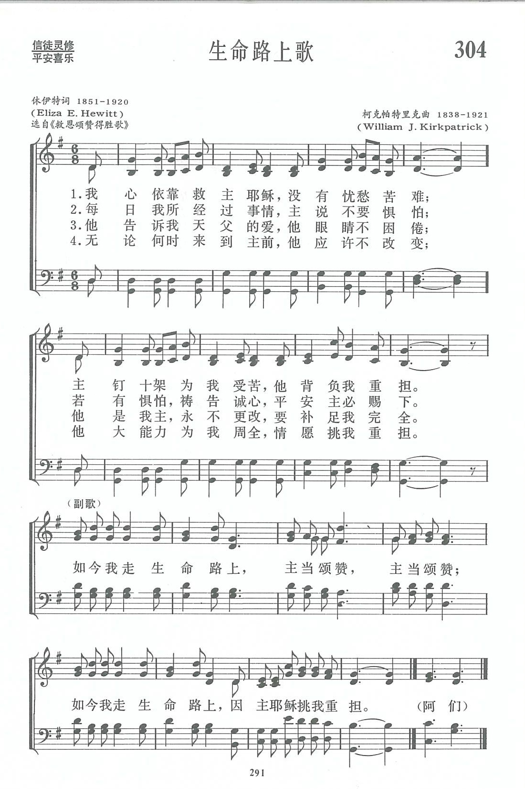

|
|
|
|
1 The trusting heart to Jesus clings, Refrain: 2 The passing days bring many cares, 3 He tells me of my Father's love 4 When to the throne of grace I flee, |
第304首《生命路上歌》 |
|
https://www.zanmeishige.com/tab/13977.html?songbook=1&index=304

|
|
|
|
|


- The Trusting Heart to Jesus Clings (Jesus Has Lifted the Load) https://youtu.be/vdLW-k_wJ40
- Singing I Go · George Beverly Shea https://youtu.be/G2RwoOSbUII https://youtu.be/XqroDm2zCe4
| Text: | Singing I Go |
| Author: | E. E. Hewitt |
| Tune: | [The trusting heart to Jesus clings] |
| Composer: | Wm. J. Kirkpatrick |
| Short Name: | E. E. Hewitt |
| Full Name: | Hewitt, E. E. (Eliza Edmunds), 1851-1920 |
| Birth Year: | 1851 |
| Death Year: | 1920 |
Pseudonym: Lidie H. Edmunds.

Eliza Edmunds Hewitt was born in Philadelphia 28 June 1851. She was educated in the public schools and after graduation from high school became a teacher. However, she developed a spinal malady which cut short her career and made her a shut-in for many years. During her convalescence, she studied English literature. She felt a need to be useful to her church and began writing poems for the primary department. she went on to teach Sunday school, take an active part in the Philadelphia Elementary Union and become Superintendent of the primary department of Calvin Presbyterian Church.
Dianne Shapiro, from "The Singers and Their Songs: sketches of living gospel hymn writers" by Charles Hutchinson Gabriel (Chicago: The Rodeheaver Company, 1916)
Tune Information
| Title: | [The trusting heart to Jesus clings] (Kirkpatrick) |
| Composer: | William J. Kirkpatrick |
| Incipit: | 51112 35655 113 |
| Key: | G Major |
| Copyright: | Public Domain |
| Short Name: | William J. Kirkpatrick |
| Full Name: | Kirkpatrick, William J. (William James), 1838-1921 |
| Birth Year: | 1838 |
| Death Year: | 1921 |
William J. Kirkpatrick (b. Duncannon, PA, 1838; d. Philadelphia, PA, 1921)

received his musical training from his father and several other private teachers. A carpenter by trade, he engaged in the furniture business from 1862 to 1878. He left that profession to dedicate his life to music, serving as music director at Grace Methodist Church in Philadelphia. Kirkpatrick compiled some one hundred gospel song collections; his first, Devotional Melodies (1859), was published when he was only twenty-one years old. Many of these collections were first published by the John Hood Company and later by Kirkpatrick's own Praise Publishing Company, both in Philadelphia.
Bert Polman
第304首 生命路上歌 JESUS HAS LIFTED THE LOAD _克帕特里克
经文：“耶稣说：‘我就是道路、真理、生命，若不藉着我，没有人能到父那里去’”(约14：6)。
这首诗的作者休伊特的事略参阅第297首，曲作者柯克帕特里克事略参阅第29首。
《生命路上歌》的副歌，常被作为短歌在礼拜之前教唱，因此不少人会背诵。
耶稣说：“凡劳苦担重担的人，可以到我这里来，我就使你们得安息”(太11：28)。耶稣也说过“我就是道路、真理、生命，若不藉着我，没有人能到父那里去”(约14：6)。
这首诗提示我们，凡走这条生命之路的人，莫忘主的眼睛永不困倦，主的应许永不改变，他“情愿挑我重担”。
https://www.xueshengshi.com/?p=8318
圣诗鉴赏《生命路上歌 | Jesus has lifted the load /The trusting heart to Jesus clings》
“耶稣说：‘我就是道路、真理、生命，若不藉着我，没有人能到父那里去。’ ” （约 14:6）

作者及诗歌介绍
这首诗的作者休伊特(E.E．Hewitt，1851-1920)是美国卫理公会一位牧师的妻子，她毕业于美国费城女子师范，毕业时名列前茅，代表毕业生在毕业典礼上致词。她曾任中学教员多年，热心主日学和社会福利事业。在她任教时期，一次有个淘气学生闹课堂，挥起石板打到休伊特夫人的背上，使她有段时间卧床不起。
休伊特夫人曾写过许多圣诗，出版后由福音派作曲家为之谱曲。《新编赞美诗》里选有休伊特的诗三首：即第297、304、377等首。
曲是美国音乐出版社工作者、宗教音乐作曲家柯克帕特里克 (W．J．Kirkpatrick，1838—1921)所谱。柯克帕特出生于爱尔兰，自幼跟父亲学音乐，之后受教于几个名师，青年时移居美国。南北战争时他参军，任军乐队吹笛手。1862—1878年在美国费城作家具商，并在美以美会担任义工，曾任美国费城美以美会唱诗班指挥(青年时期就一面作曲一面指挥)。他在1859年21岁时即开始编辑出版赞美诗工作，以后与斯托克顿①、斯威尼②合编出版约一百多部宗教音乐集和书刊。
他最喜爱并谱写了不少信徒所喜爱的福音歌曲。《新编赞美诗》内除这首外，还有第29、41、78、94、235、313、342 等首的曲调也是他的作品。柯克帕特习惯于每天长时间工作。1921年9月29日晚上，他告诉妻子要到书房去写一首诗谱，到半夜还未见回房睡觉。当他妻子起来去看他时， 只见他仍在书桌前坐着，手里握着写《主啊，我向你祈求》的笔，未完成的诗稿还平铺在桌面上，而他的灵魂已经离开了他。
诗歌赏析
《生命路上歌》的副歌，常被作为短歌在礼拜之前教唱，因此不少人会背诵。
耶稣说：“凡劳苦担重担的人，可以到我这里来，我就使你们得安息”（太 11:28）。耶稣也说过“我就是道路、真理、生命，若不藉着我，没有人能到父那里去”（约 14:6）。这首诗提示我们，凡走这条生命之路的人，莫忘主的眼睛永不困倦，主的应许永不改变，他“情愿挑 我重担”。
Words: Eliza Edmunds Hewitt (b. June 28, 1851; d. Apr.
24, 1920)
Music: William James Kirkpatrick (b. Feb. 27, 1838; d.
Sept. 20, 1921)
Links:
Wordwise Hymns (Eliza
Hewitt)
The Cyber
Hymnal
Hymnary.org
Note: The present hymn was published 1898. For a list other songs by Miss Hewitt that appear in many evangelical hymnals, check the Wordwise Hymns link.
CH-1) The trusting heart to Jesus clings,
Nor any ill forebodes,
But at the cross of Calv’ry, sings,
Praise God for lifted loads!
Singing I go along life’s road,
Praising the Lord, praising the Lord,
Singing I go along life’s road,
For Jesus has lifted my load.
Some of us old-timers, I’m sure remember Jimmy Durante, who was both a capable comedian and a skilled musician. In the early thirties, Durante wrote a song that became identified with him. It began, “Ya gotta start of each day with a song, / Even when things go wrong.” Even though we may experience dark days when that seems virtually impossible, there is some wisdom in the song’s advice all the same. The right songs can cheer us, lift our spirits, and brighten our day.
In the Word of God, King Saul of Israel illustrates that. In times when a black mood gripped his soul, young David would come and play his harp for the depressed king. When he did so, we read, “Then Saul would become refreshed and well [cheerful], and the distressing spirit would depart from him” (I Sam. 16:23).
Missionaries Paul and Silas provide another example. For their ministry for Christ, they were beaten, and cast into a prison cell in Philippi, with their feet fastened in stocks (Acts 16:23-24). But even in that awful place, they found joy in serving the Lord. “At midnight, Paul and Silas were praying and singing hymns to God, and the prisoners were listening to them” (vs. 25). Truly, God “gives songs in the night” (Job 35:10).
Over the centuries since the New Testament era began, something like a million Christian hymns have been written. Some of these describe incidents recorded in the Bible. Others teach the doctrines found there–particularly proclaiming the gospel of grace, and salvation through Christ. And still others are actually the personal testimonies of the song-writers themselves. They tell of God’s faithfulness in bringing them through trying times.
When we sing Fanny Crosby’s All the Way My Saviour Leads Me, we are joining her in praise for how the Lord met a financial need in an amazing way. When we sing Joseph Scrivien’s What a Friend We Have in Jesus, we are sharing what he discovered of the comfort of the Saviour, after his fiancee drowned on the eve of their wedding.
Eliza Hewitt was a school teacher in Philadelphia. She also wrote hundreds of fine gospel songs. Many have a joyful tone, though she struggled for years with a painful back injury. The joy of knowing the Lord Jesus Christ as her Saviour, and of having an opportunity to serve Him brightened her days.
The present song reflects this, speaking of the privilege and blessing of prayer (cf. Heb. 4:15-16).
CH-2) The passing days bring many cares,
“Fear not,” I hear Him say,
And when my fears are turned to prayers,
The burdens slip away.
CH-4) When to the throne of grace I flee,
I find the promise true,
The mighty arms upholding me
Will bear my burdens too.
A couple of decades after the song was introduced, it was adopted for a rather unusual use in the home of another great gospel musician. Billy Graham’s longtime soloist, Bev Shea, tells of what his home was like, growing up as a boy in Winchester, Ontario. On school days, when it was time for the six children to rise, his mother would sound a chord on the piano and sing the refrain of this song. Then she would call out, cheerfully, “Get up, everybody. One hour till school!” Bev called the song “mother’s alarm clock.”
It remained a favourite of his, and one he recorded. Years later, he hosted a radio program called Club Time, that used Singing I Go as its theme song. On the program each week, Bev featured the favourite hymn of some famous person. Baseball’s Babe Ruth’s was God Is Ever Beside Me; popular songstress Kate Smith’s favourite was I Love to Tell the Story; and opera and concert star John Charles Thomas’s was Softly and Tenderly. We have many songs of praise that can brighten life’s path.
Questions:
1) Is there a particular hymn you often find yourself humming or singing
at various times during the day?
2) Does your family often sing a hymn together during family devotions?
Links:
Wordwise Hymns (Eliza
Hewitt)
The Cyber
Hymnal
Hymnary.org
https://wordwisehymns.com/2015/05/04/singing-i-go/